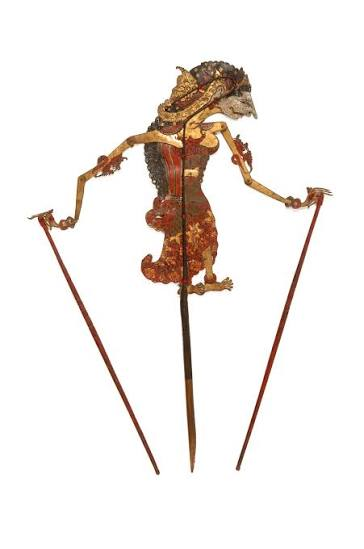
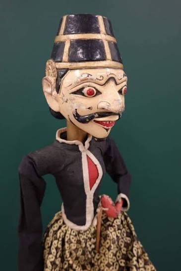
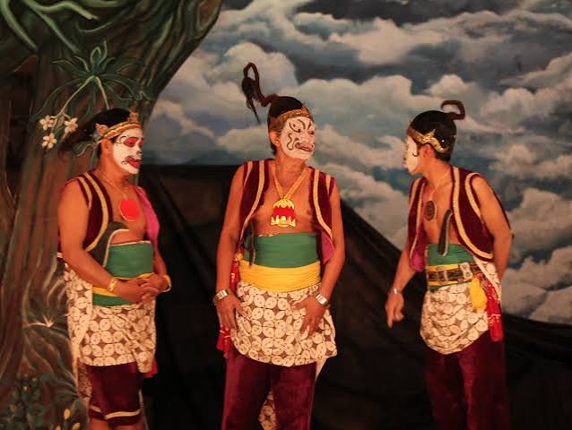
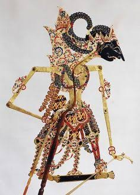

Selamat Datang di Dunia Wayang
Wayang adalah seni pertunjukan tradisional Indonesia yang telah hidup selama berabad-abad. Dengan bayangan dan gerak yang halus, wayang menghadirkan cerita-cerita epik seperti Ramayana, Mahabharata, dan kisah-kisah leluhur Jawa.
Setiap tokoh wayang memiliki karakter dan pesan moral yang khas. Melalui musik gamelan, dialog, dan ekspresi para dalang, pertunjukan wayang tidak hanya menghibur, tetapi juga menjadi media pendidikan, kebudayaan, dan spiritualitas bagi masyarakat Indonesia.
Wayang merupakan warisan budaya yang sangat berharga dan telah diakui dunia sebagai bagian dari kekayaan seni Indonesia.
Tentang Wayang
Wayang berasal dari bahasa Jawa yang berarti "bayangan" atau "menggambarkan". Seni ini biasanya dimainkan dengan menggunakan boneka kulit, kayu, atau figur manusia yang dipentaskan di depan layar putih sambil diiringi gamelan.
Di Indonesia, terdapat beberapa jenis wayang, seperti wayang kulit, wayang golek, wayang wong, dan wayang klitik. Masing-masing memiliki ciri khas dan cerita yang berbeda, namun tetap mengandung nilai keindahan, filosofi, dan kearifan lokal.
Wayang bukan sekadar tontonan; ia juga mencerminkan kehidupan, perjuangan, serta ajaran moral yang tetap relevan hingga saat ini.
Galeri Wayang
Ganti gambar placeholder dengan foto wayang Anda.




Kontak Kami
Untuk informasi lebih lanjut tentang pertunjukan wayang, workshop, atau pameran budaya, silakan hubungi:
Alamat: Bali, Indonesia
Email: abcd@example.com
Telepon: +62 812 3456 7890